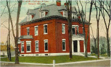

<!DOCTYPE html>
<html>
  <head>
    <title>Map Proof of Concept</title>
    <meta name="viewport" content="initial-scale=1.0, user-scalable=no">
    <meta charset="utf-8">
    <style>
      html, body, #map-canvas {
        margin: 0;
        padding: 0;
        height: 100%;
      }
      
      img {
		  margin-right: 3px;
		}
    </style>
    <script src="https://maps.googleapis.com/maps/api/js?v=3.exp&sensor=false"></script>
    <script>

function initialize() {
  
  var defaultIcon = "http://maps.google.com/mapfiles/marker.png"
  
  
  
  /* COORDS GO HERE */
  var davenportCoords = new google.maps.LatLng(44.797536, -68.77416);
  var bangorhouseCoords = new google.maps.LatLng(44.79883, -68.772658);
  var isaacFarrarCoords = new google.maps.LatLng(44.799774, -68.774675);
  var thomasHillCoords = new google.maps.LatLng(44.799728, -68.774439);
  var hannibalCoords = new google.maps.LatLng(44.800718, -68.779975);
  var theologicalCoords = new google.maps.LatLng(44.801281, -68.778237);
  var josephWhiteCoords = new google.maps.LatLng(44.803169, -68.783623);
  var williamArnoldCoords = new google.maps.LatLng(44.802316, -68.78446);
  var harryAndWilliamCoords = new google.maps.LatLng(44.801768, -68.785039);
  var josephLowCoords = new google.maps.LatLng(44.80728, -68.782228);
  var standpipeCoords = new google.maps.LatLng(44.807356, -68.782893);
  var williamBlakeCoords = new google.maps.LatLng(44.803656, -68.776606);
  var kenduskeagCoords = new google.maps.LatLng(44.802012, -68.770941);
  var bangorSavingsCoords = new google.maps.LatLng(44.802347, -68.769182);
  var pickeringCoords = new google.maps.LatLng(44.800017, -68.772272);
  
  
  var mapOptions = {
    zoom: 15,
    center: new google.maps.LatLng(44.799774, -68.774675),
    mapTypeId: google.maps.MapTypeId.ROADMAP
  }
	var map = new google.maps.Map(document.getElementById('map-canvas'), mapOptions);


/* MARKERS DEFINED HERE */
var davenportMarker = new google.maps.Marker({
    position: davenportCoords,
    map: map,
    title: 'Davenport Park'
});

var bangorhouseMarker = new google.maps.Marker({
    position: bangorhouseCoords,
    map: map,
    title: 'Bangor House'
});

var isaacFarrarMarker = new google.maps.Marker({
    position: isaacFarrarCoords,
    map: map,
    title: 'Isaac Farrar Mansion'
});

var theologicalMarker = new google.maps.Marker({
    position: theologicalCoords,
    map: map,
    title: 'Bangor Theological Seminary'
});

var josephWhiteMarker = new google.maps.Marker({
    position: josephWhiteCoords,
    map: map,
    title: 'Joseph C. White House'
});

var williamArnoldMarker = new google.maps.Marker({
    position: williamArnoldCoords,
    map: map,
    title: 'William Arnold House'
});

var harryAndWilliamMarker = new google.maps.Marker({
    position: harryAndWilliamCoords,
    map: map,
    title: 'Harry W. Smith-William L. Miller House'
});

var josephLowMarker = new google.maps.Marker({
    position: josephLowCoords,
    map: map,
    title: 'Joseph Low House'
});


var standpipeMarker = new google.maps.Marker({
    position: standpipeCoords,
    map: map,
    title: 'Thomas Hill Standpipe'
});

var williamBlakeMarker = new google.maps.Marker({
    position: williamBlakeCoords,
    map: map,
    title: 'William Augustus Blake House'
});


var kenduskeagMarker = new google.maps.Marker({
    position: kenduskeagCoords,
    map: map,
    title: 'Kenduskeag Mall'
});


var bangorSavingsMarker = new google.maps.Marker({
    position: bangorSavingsCoords,
    map: map,
    title: 'Bangor Savings Bank'
});

var pickeringMarker = new google.maps.Marker({
    position: pickeringCoords,
    map: map,
    title: 'Pickering Block'
});

var thomasHillMarker = new google.maps.Marker({
    position: thomasHillCoords,
    map: map,
    title: 'Thomas A. Hill House'
});

var thomasHillMarker = new google.maps.Marker({
    position: thomasHillCoords,
    map: map,
    title: 'Thomas A. Hill House'
});


/* CONTENT DEFINED HERE */
var davenportContent = ' \"Remember the Maine\" Memorial located here. A granite wedge-shaped monument surmounted by a bronze shaft bearing and American eagle, created in 1922. On the monument are the original shield and scroll recovered from the battleship Maine, blown up in Havana Harbor in 1898. The base of the monument, triangular in shape to resemble a ship’s prow, was designed by Edwin S. Kent and was dedicated in memory of soldiers and sailors of the Spanish-American War. ';

var bangorhouseContent = ' Built 1833-1834.<br>  Survivor of stagecoach, schooner and steamboat days, and the last survivor of the “palace hotels” in the country. It was built on the same plan as Boston’s Tremont House, though smaller in scale. Financed by wealthy lumbermen and designed by Isaiah Rogers, the Bangor House opened in 1834 in a New Year’s Ball celebration. It was only a short walk but a world away from the Penobscot River and Devil’s Half Acre, a bawdy district where lumbermen, dockworkers and sailors frequented grog shops and brothels. One of the hotel’s first functions was a dinner for Daniel Webster, then New England’s favorite son as presidential candidate. President Ulysses S. Grant stayed at the Bangor House when he came to officially open the European-North American Railroad. Notable Bangor House guests also included Arthur Harrison, Theodore Roosevelt, Stephen A. Douglas, and Oscar Wilde. The cuisine was famous – chicken and steak for breakfast, as well as Penobscot River salmon, venison, and moose in season. All these delicacies were part of the American plan which also included a fine room. Some rooms had adjoining parlors. In the days of Prohibition in Maine, hotels and restaurants operated under the Bangor Plan.  The bar operator paid a standard fine in court twice a year and was politely ignored by police the rest of the time. Carrie A. Nation, the hatchet-wielding prohibitionist, wrote in her memoirs that the Bangor House manager, Captain Horace Crockett Chapman, was the worst rum seller in the country!';

var isaacFarrarContent = ' This Greek revival design, which incorporates elements of English Regency style, was designed by Richard Upjohn in 1833 and built 1838-1846. Farrar was an important merchant and banker who had the house built as a wedding present for his wife. A circular room is finished throughout with solid mahogany from Santo Domingo.';

var thomasHillContent = ' Distinguished structure designed by Richard Upjohn, one of the giants in American architectural history, for businessman-lawyer Hill. The house was built in Greek Revival style with Ionic columns; the large Italianate double doors were an 1840’s modification. In 1871 President Ulysses S. Grant was entertained in this house. It is now the home of Bangor Museum and History Center.';

var theologicalContent = 'The oldest institution in Bangor and the only one of its kind in northern New England, it was incorporated as the Maine Charity School in 1804. The whole campus is on the National Register of Historic Places and listed under the Bangor ordinance. Important buildings include Maine Hall, built 1833-1835, architect Charles H. Pond, and the gymnasium, built 1897, architect Wilfred E. Mansur, remodeled as the Wellman Commons. In the rigorous days of its past when the students got their water from a campus well and used stoves and oil lamps, they could save ten cents a week on board by not drinking tea or coffee. Notable alumni include Civil War general and Maine governor Joshua Lawrence Chamberlain and U.S. Congressman Samuel C. Fessenden.'
var josephWhiteContent = 'Built 1866-1868, attributed to Calvin Ryder of Boston Designed in the fashionable Mansard style, this house was one of several mansions built after the Civil War on West Broadway. This one was erected for the fabulous sum of $15,000. Notice the unusually large lot sizes which display a taste for the bucolic and picturesque effects in suburban landscaping.'
var williamArnoldContent = 'Bangor’s only Italianate villa, this house was the first built on the street. The first owner ran a prosperous livery stable. Over the years a Queen Anne tower, a new front porch, and a porte-cochere were added to keep the house current in style. The custom wrought-iron fence was added by the present owners, Stephen and Tabitha King.'
var harryAndWilliamContent = 'One of the city’s important Shingle style houses, a style most closely associated with coastal summer homes in Maine. The circular tower, irregular window groupings and the second story gabled porch show the influence of the Queen Anne style.'
var josephLowContent = 'built 1857<br>One of the best examples of Italianate architecture in the city, architect Harvey Graves of Boston.'
var standpipeContent = 'Thomas Hill Road<br>Built 1897, designed by Ashley B. Tower of Holyoke, MA <br>The standpipe is unique in the nation as a water tower-observatory in the Shingle style. It commands a sweeping view of the city and the hills beyond. When lit at night, it’s known as “the diamonds in the crown of the Queen City.” The standpipe is open to the public one day a season; contact the Bangor Water District for more information on visiting.'
var williamBlakeContent = '107 Court Street<br>Built 1858<br>Architect Calvin Ryder. This house was designed for a wealthy Bangor banker, William Blake, in the Mansard or Second Empire style. It now houses the Prentiss and Carlisle Company. All of the original plans are preserved.'
var kenduskeagContent = 'A continuation of the parkway, it lies between Central and State Streets. <br>The name kenduskeag, a local Native American word meaning ‘eel catching place,’ was applied to Bangor until its incorporation in 1791. A bronze plaque and boulder here commemorates the landing of Samuel de Champlain in 1604. Near the boulder are two cannons, one a relic of the Spanish-American War, the other a piece recovered from one of the American ships sunk in the river during the Penobscot Expedition retreat in 1779. Charles Tefft also struck the bronze statue of Vice President Hannibal Hamlin which rises in the center of the mall. From 1853 until the Great Fire, the U.S. Custom House and Post Office stood here. '
var bangorSavingsContent = '2 State Street<br>Built 1912<br>architects Carrere & Hastings <br>Built after the disastrous 1911 fire, this Beaux-Arts granite building was built in the form of a classical temple. Notice the original pair of iron torchere-shaped lights beside the door. '
var pickeringContent = '105 Main Street<br>Built 1871<br>architect George W. Orff of Bangor<br>Example of Second Empire style, granite quarried in Frankfort, Maine. It is individually on the National Register and now part of the Main Street Historic District on the north side of the street. The West Market Square Historic District covers much of the opposite side of Main Street.'


/* INFOWINDOWS HERE */
var davenportInfowindow = new google.maps.InfoWindow({
    content: davenportContent
});

var bangorhouseInfowindow = new google.maps.InfoWindow({
    content: bangorhouseContent
});

var isaacFarrarInfowindow = new google.maps.InfoWindow({
    content: isaacFarrarContent
});

var thomasHillInfowindow = new google.maps.InfoWindow({
    content: thomasHillContent
});

var theologicalInfowindow = new google.maps.InfoWindow({
    content: theologicalContent
});

var josephWhiteInfowindow = new google.maps.InfoWindow({
    content: josephWhiteContent
});

var williamArnoldInfowindow = new google.maps.InfoWindow({
    content: williamArnoldContent
});

var harryAndWilliamInfowindow = new google.maps.InfoWindow({
    content: harryAndWilliamContent
});

var josephLowInfowindow = new google.maps.InfoWindow({
    content: josephLowContent
});

var standpipeInfowindow = new google.maps.InfoWindow({
    content: standpipeContent
});

var williamBlakeInfowindow = new google.maps.InfoWindow({
    content: williamBlakeContent
});

var kenduskeagInfowindow = new google.maps.InfoWindow({
    content: kenduskeagContent
});

var bangorSavingsInfowindow = new google.maps.InfoWindow({
    content: bangorSavingsContent
});

var pickeringInfowindow = new google.maps.InfoWindow({
    content: pickeringContent
});


/* EVENTS HERE */
google.maps.event.addListener(davenportMarker, 'mouseover', function() {
	davenportInfowindow.open(map,davenportMarker);
});

google.maps.event.addListener(davenportMarker, 'mouseout', function() {
    davenportInfowindow.close();
});

google.maps.event.addListener(bangorhouseMarker, 'mouseover', function() {
	bangorhouseInfowindow.open(map,bangorhouseMarker);
});

google.maps.event.addListener(bangorhouseMarker, 'mouseout', function() {
    bangorhouseInfowindow.close();
});

google.maps.event.addListener(isaacFarrarMarker, 'mouseover', function() {
	isaacFarrarInfowindow.open(map,isaacFarrarMarker);
});

google.maps.event.addListener(isaacFarrarMarker, 'mouseout', function() {
    isaacFarrarInfowindow.close();
});

google.maps.event.addListener(thomasHillMarker, 'mouseover', function() {
	thomasHillInfowindow.open(map,thomasHillMarker);
});

google.maps.event.addListener(thomasHillMarker, 'mouseout', function() {
	thomasHillInfowindow.close();
});

google.maps.event.addListener(theologicalMarker, 'mouseover', function() {
	theologicalInfowindow.open(map,theologicalMarker);
});

google.maps.event.addListener(theologicalMarker, 'mouseout', function() {
    theologicalInfowindow.close();
});

google.maps.event.addListener(josephWhiteMarker, 'mouseover', function() {
	josephWhiteInfowindow.open(map,josephWhiteMarker);
});

google.maps.event.addListener(josephWhiteMarker, 'mouseout', function() {
    josephWhiteInfowindow.close();
});

google.maps.event.addListener(williamArnoldMarker, 'mouseover', function() {
	williamArnoldInfowindow.open(map,williamArnoldMarker);
});

google.maps.event.addListener(williamArnoldMarker, 'mouseout', function() {
    williamArnoldInfowindow.close();
});

google.maps.event.addListener(harryAndWilliamMarker, 'mouseover', function() {
	harryAndWilliamInfowindow.open(map,harryAndWilliamMarker);
});

google.maps.event.addListener(harryAndWilliamMarker, 'mouseout', function() {
    harryAndWilliamInfowindow.close();
});

google.maps.event.addListener(josephLowMarker, 'mouseover', function() {
	 josephLowInfowindow.open(map, josephLowMarker);
});

google.maps.event.addListener(josephLowMarker, 'mouseout', function() {
     josephLowInfowindow.close();
});

google.maps.event.addListener(standpipeMarker, 'mouseover', function() {
	standpipeInfowindow.open(map,standpipeMarker);
});

google.maps.event.addListener(standpipeMarker, 'mouseout', function() {
    standpipeInfowindow.close();
});

google.maps.event.addListener(williamBlakeMarker, 'mouseover', function() {
	williamBlakeInfowindow.open(map,williamBlakeMarker);
});

google.maps.event.addListener(williamBlakeMarker, 'mouseout', function() {
    williamBlakeInfowindow.close();
});

google.maps.event.addListener(kenduskeagMarker, 'mouseover', function() {
	kenduskeagInfowindow.open(map,kenduskeagMarker);
});

google.maps.event.addListener(kenduskeagMarker, 'mouseout', function() {
    kenduskeagInfowindow.close();
});

google.maps.event.addListener(bangorSavingsMarker, 'mouseover', function() {
	bangorSavingsInfowindow.open(map,bangorSavingsMarker);
});

google.maps.event.addListener(bangorSavingsMarker, 'mouseout', function() {
    bangorSavingsInfowindow.close();
});

google.maps.event.addListener(pickeringMarker, 'mouseover', function() {
	pickeringInfowindow.open(map,pickeringMarker);
});

google.maps.event.addListener(pickeringMarker, 'mouseout', function() {
    pickeringInfowindow.close();
});

}

google.maps.event.addDomListener(window, 'load', initialize);


    </script>
  </head>
  <body>
    <div id="map-canvas"></div>
  </body>
</html>
